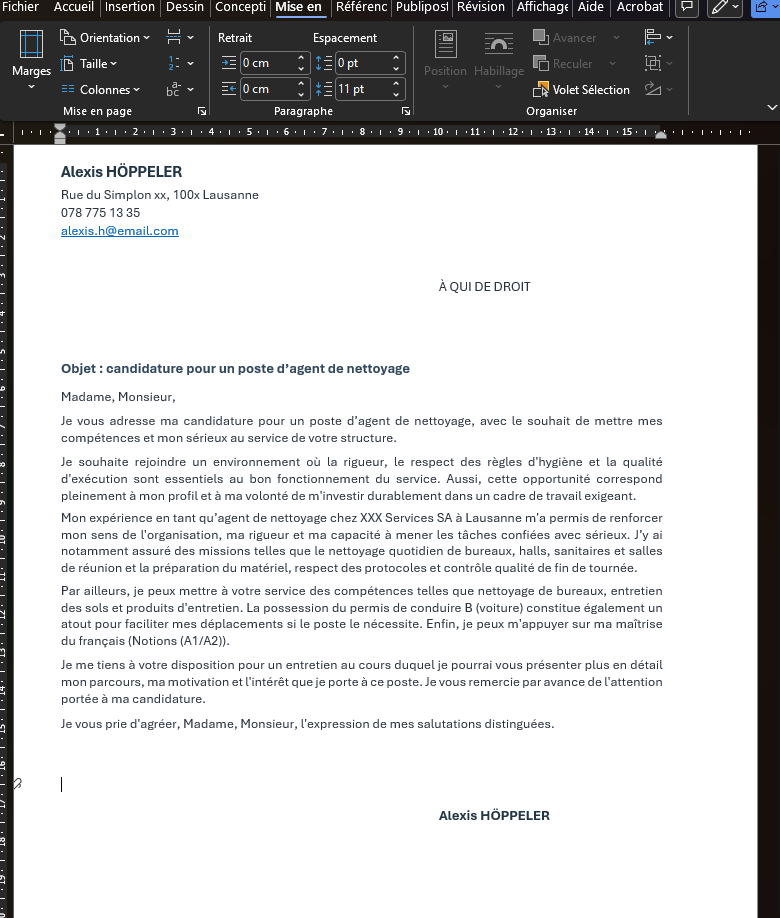
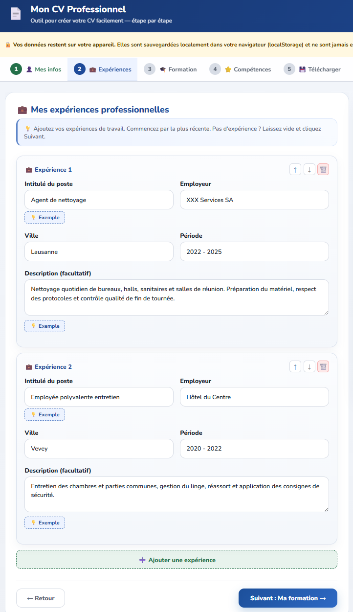
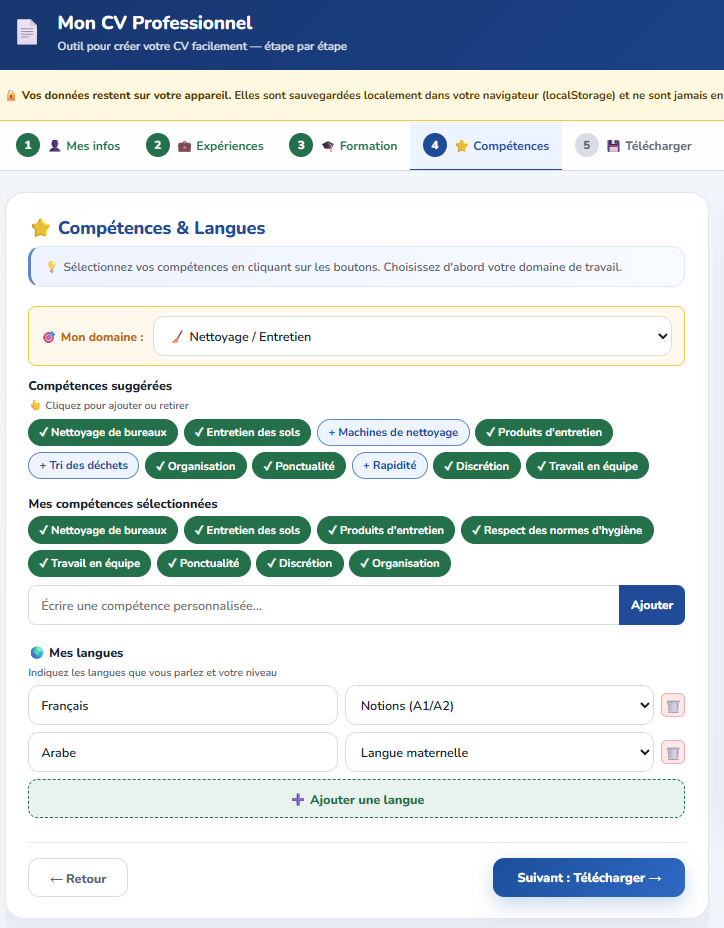
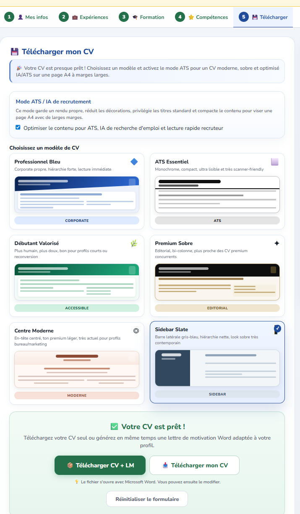

−60 min
par dossier CV + lettre vs. production manuelle dans Word
Un outil interne, sans internet ni serveur, pour produire des CV Word modernes avec les participants — en deux fois moins de temps.
 CV Word
CV Word
Lettre de motivationUtilisable seul ou animé en séance collective.





Le CV et la lettre de motivation sont générés ensemble, modifiables dans Word, LibreOffice ou Google Docs.
CV Word exporté